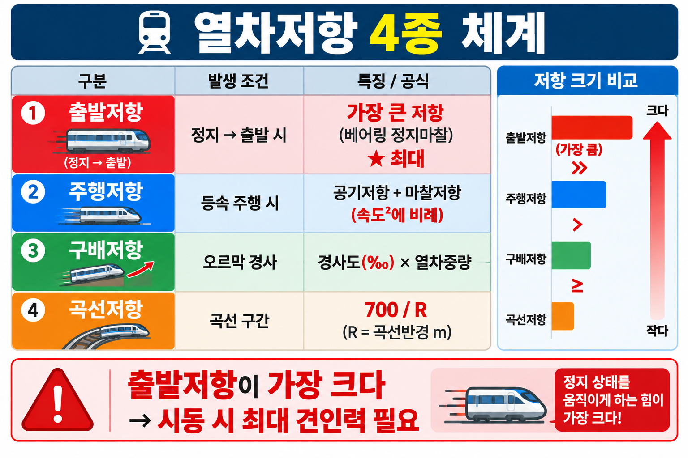

GATE5 · PART 12 · UNIT 12-01
열차저항 4종
출발저항 · 곡선저항 · 구배저항 · 공기저항 — 개념·공식·특성
★★★ A등급
FINAL PUBLISH v1.0
§0 선행 용어
주행저항 (Running Resistance)
열차가 운행 중 받는 모든 저항력의 총합. 열차저항 4종의 합산값. 단위: kg 또는 kg/t.
출발저항 (Starting Resistance)
정지 상태에서 기동 시 추가로 발생하는 저항. 정지 마찰·베어링 점성 저항 등 포함. 기동 후 소멸.
곡선저항 (Curve Resistance)
곡선 구간에서 차륜과 레일 간 마찰·횡압 등으로 발생하는 저항. 곡선반경에 반비례.
구배저항 (Grade Resistance)
기울기 구간 주행 시 중력 성분으로 발생하는 저항. 상구배(오르막)에서 견인력 반대 방향 작용.
공기저항 (Air Resistance)
열차가 공기를 밀어내며 발생하는 저항. 속도의 제곱에 비례. 고속철도에서 주행저항의 대부분.
§1 열차저항 4종 분류 (SOURCE: 4.html 개념49)
4.html 개념49 (p8-35)
주행저항 체계 — 4종 분류
★★★
| 종류 | 발생 원인 | 특성 | 발생 조건 |
|---|---|---|---|
| ① 출발저항 | 정지→기동 시 마찰·점성 저항 | 기동 직후 일시적으로 크게 발생, 주행 시 소멸 | 정차 후 기동 시 |
| ② 곡선저항 | 곡선부 차륜·레일 마찰, 횡압 | 곡선반경 r이 작을수록 증가. 직선 구간 = 0 | 곡선 구간 통과 시 |
| ③ 구배저항 | 기울기에 따른 중력 성분 | 상구배(오르막)에서 양(+), 하구배(내리막)에서 음(−) | 경사 구간 주행 시 |
| ④ 공기저항 | 공기 점성, 차체 전·후방 압력차 | 속도²에 비례. 고속일수록 지배적 | 항상 발생 (속도 증가 시 급증) |
🎯 암기법: 출·곡·구·공 = 출발저항 / 곡선저항 / 구배저항 / 공기저항
주행저항 합계: R_total = R_출발 + R_곡선 + R_구배 + R_공기
주행저항 합계: R_total = R_출발 + R_곡선 + R_구배 + R_공기
§2 곡선저항·구배저항 계산 공식 (SOURCE: 4.html 개념49)
곡선저항 R = 700 / r (kg/t)
r = 곡선반경 (m) | 단위: kg/t (열차 1톤당 저항)
전체 저항(kg) = R(kg/t) × 열차중량(t)
구배저항 R = W × i (kg)
W = 열차중량 (t) | i = 기울기 (‰) | 단위: kg
예) W=600t, i=15‰ → R = 600 × 15 = 9,000 kg
engineering id:56, 61
곡선저항·구배저항 공식 적용
★★★ ⚠️
| 항목 | 곡선저항 | 구배저항 |
|---|---|---|
| 공식 | R = 700/r (kg/t) | R = W × i (kg) |
| 변수 | r = 곡선반경(m) | W = 중량(t), i = 기울기(‰) |
| 단위 | kg/t (단위 저항) | kg (절대 저항) |
| 계산 예시 | r=350m → R = 700/350 = 2 kg/t | W=600t, i=15‰ → R = 9,000 kg |
| 특성 | 반경↓ → 저항↑ (반비례) | 기울기↑, 중량↑ → 저항↑ (정비례) |
⚠️ 단위 주의: 곡선저항은 kg/t (단위저항), 전체 저항은 kg/t × 중량(t) = kg
구배저항 단위는 처음부터 kg (W×i로 바로 절대값 계산)
구배저항 단위는 처음부터 kg (W×i로 바로 절대값 계산)
§3 공기저항 특성 (SOURCE: 4.html 개념49)
4.html 개념49 · engineering id:62
공기저항 — 속도²에 비례
★★★
| 항목 | 내용 |
|---|---|
| 비례 관계 | 공기저항 ∝ v² (속도 제곱에 비례) |
| 영향 요인 | 차체 형상(유선형), 단면적, 표면 거칠기 |
| 고속에서의 비율 | 고속철도에서 전체 주행저항의 대부분을 차지 |
| 저감 방법 | 유선형 차체 설계, 대차 및 차체 하부 정리 |
📌 속도가 2배 → 공기저항은 4배(2²) 증가
고속철도에서 공기저항이 지배적인 이유: v² 관계로 고속일수록 급격히 증가
고속철도에서 공기저항이 지배적인 이유: v² 관계로 고속일수록 급격히 증가
§4 열차저항 체계 도해

VIS-083 · 열차저항 4종 체계표

VIS-094 · 철도차량 열차저항 체계
§5 시험 포인트 · 함정
🎯 핵심 암기 포인트
- 열차저항 4종: 출발·곡선·구배·공기 (출·곡·구·공)
- 곡선저항 공식: R = 700/r (kg/t), r=곡선반경(m)
- 구배저항 공식: R = W × i (kg), W=중량(t), i=기울기(‰)
- 공기저항: 속도²에 비례 — 고속철도에서 주행저항의 대부분
- 출발저항: 기동 시 일시 발생, 주행 중 소멸
- 직선 구간에서 곡선저항 = 0
| 함정 선택지 | 정오 | 근거 |
|---|---|---|
| "곡선저항은 곡선반경이 클수록 증가한다" | ❌ 오답 | 반경 작을수록 증가 (R=700/r, 반비례) |
| "공기저항은 속도에 비례한다" | ❌ 오답 | 속도의 제곱에 비례 (v²) |
| "직선 구간에서도 곡선저항이 발생한다" | ❌ 오답 | 직선 구간 곡선저항 = 0 |
| "출발저항은 주행 중에도 지속된다" | ❌ 오답 | 출발저항은 기동 직후만 발생, 주행 중 소멸 |
| "구배저항 단위는 kg/t이다" | ❌ 오답 | 구배저항 단위 = kg (곡선저항이 kg/t) |
📝 기출문제 (3문항)
※ 전체 문제·정답·해설이 펼쳐진 상태로 표시됩니다.
Q1
engineering id:56 · SOURCE: 4.html 개념49 · 곡선저항 계산
곡선반경 350m인 구간에서의 곡선저항은? (단, 곡선저항 공식: R=700/r kg/t)
- ① 1 kg/t
- ② 2 kg/t
- ③ 3 kg/t
- ④ 4 kg/t
정답: ② 2 kg/t
R = 700/350 = 2 kg/t. 반경이 작을수록 저항 증가. 직선 구간은 곡선저항 = 0.
R = 700/350 = 2 kg/t. 반경이 작을수록 저항 증가. 직선 구간은 곡선저항 = 0.
Q2
engineering id:61 · SOURCE: 4.html 개념49 · 구배저항 계산
총중량 600t 열차가 15‰ 구배를 오를 때 구배저항은?
- ① 6,000 kg
- ② 7,500 kg
- ③ 9,000 kg
- ④ 10,000 kg
정답: ③ 9,000 kg
구배저항 R = W × i = 600 × 15 = 9,000 kg. (W: 열차중량 ton, i: 기울기 ‰)
구배저항 R = W × i = 600 × 15 = 9,000 kg. (W: 열차중량 ton, i: 기울기 ‰)
Q3
engineering id:62 · SOURCE: 4.html 개념49 · 공기저항
열차 주행 시 발생하는 저항 중 속도의 제곱에 비례하여 고속에서 지배적인 저항은?
- ① 구배저항
- ② 곡선저항
- ③ 공기저항
- ④ 출발저항
정답: ③ 공기저항
공기저항: 속도²에 비례. 고속철도에서 주행저항의 대부분을 차지. 유선형 차체로 공기저항 감소.
공기저항: 속도²에 비례. 고속철도에서 주행저항의 대부분을 차지. 유선형 차체로 공기저항 감소.